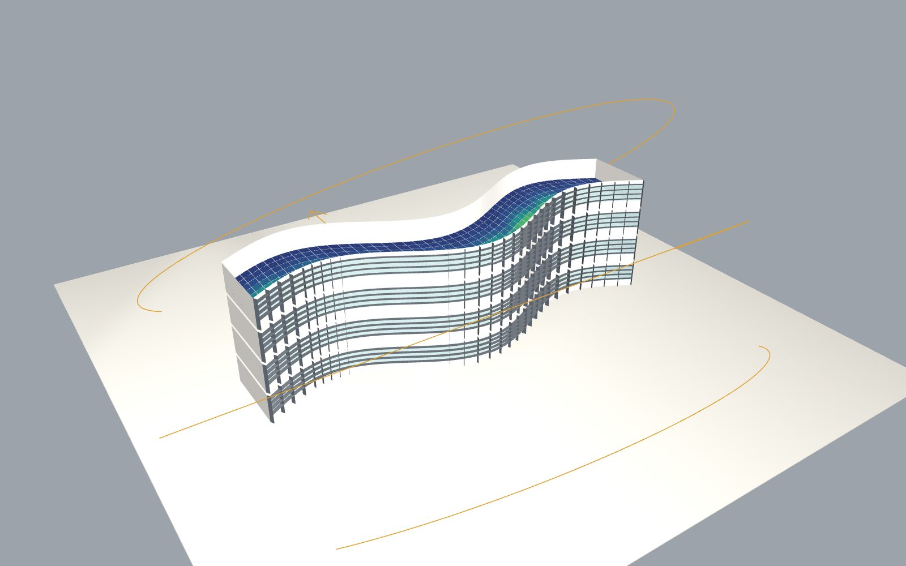
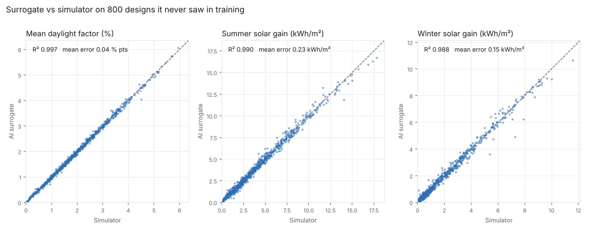

01
AI + parametric façade
Daylight surrogate
A curved office block where every bay faces a different way. A neural network trained on 4,000 simulated designs predicts daylight on every desk and the solar gain through the glass, then tunes louvres and fins bay by bay, live in Grasshopper and in Dynamo for Revit.
0.997R² on unseen designs
~55×faster than the simulator
8 baysoptimised in ~1 s